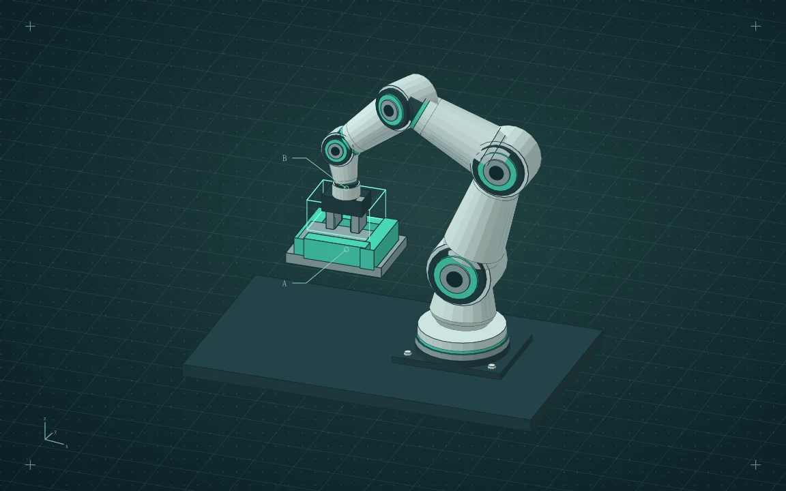

Isaac Lab 装配与触觉仿真Tactile Assembly in Isaac Lab
将千觉 Xense SDK 接入 Isaac Lab，在装配场景中模拟夹爪接触与触觉响应。The Xense SDK brings simulated gripper contact and tactile sensing into Isaac Lab assembly tasks.

在仿真里记录接触Capturing contact in simulation
我在 Isaac Lab 里用机械臂和触觉夹爪搭了一套装配场景，把千觉的 Xense SDK 接入其中。在插入和按压这些动作里，我关心物体开始接触的那一刻，以及装配受阻后怎样调整动作。I built an assembly scene in Isaac Lab with a robot arm and a tactile gripper and integrated the Xense SDK. During insertion and pressing, I was interested in the moment contact began and how the arm could correct its motion when an object failed to seat.
我集成触觉 SDK，并为机械臂编写装配任务的自动示教流程。I integrated the tactile SDK and programmed automated demonstrations for the assembly arm.
编排装配动作Generate assembly motions
搭建含机械臂与触觉夹爪的仿真场景，编写抓取、插入、按压和盒盖装配流程。I set up an arm and tactile gripper for grasping, insertion, pressing, and lid assembly in simulation.
处理装配受阻Recover from obstructions
在示教中引入位姿扰动，并根据接触受阻情况执行重抓或纠偏。I added pose perturbations, obstruction detection, regrasping, and corrective motions to the simulated demonstrations.
查看一次装配Reviewing an assembly attempt
在仿真装配任务中生成示教轨迹，并观察接触状态与恢复动作。The simulated assembly tasks produced demonstration trajectories for inspecting contact and recovery behaviour.